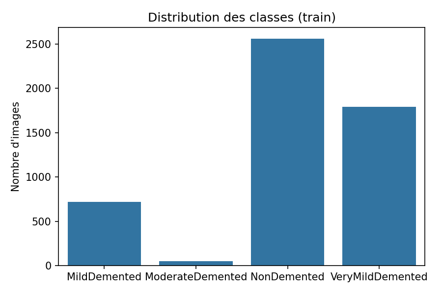
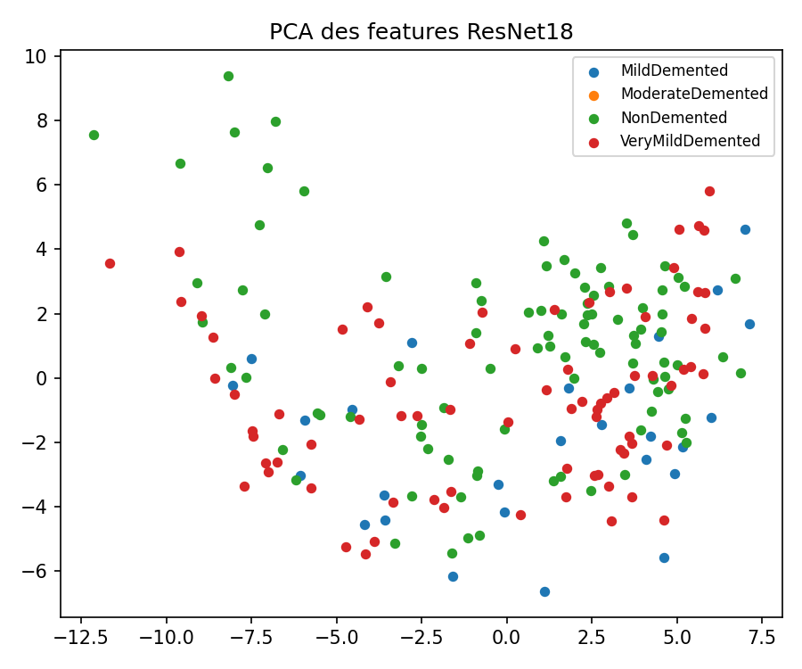
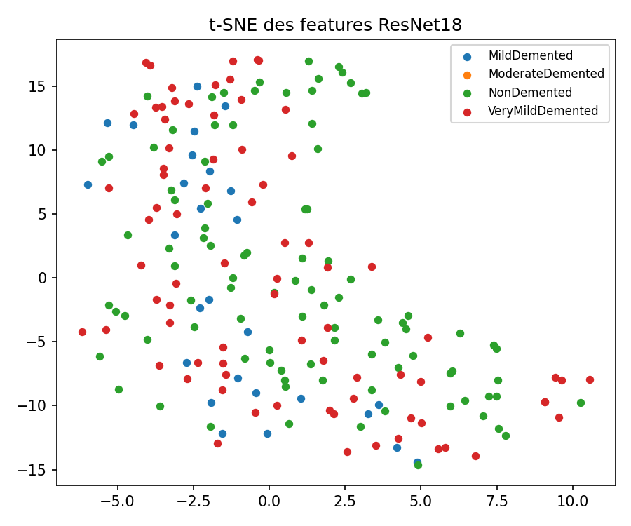
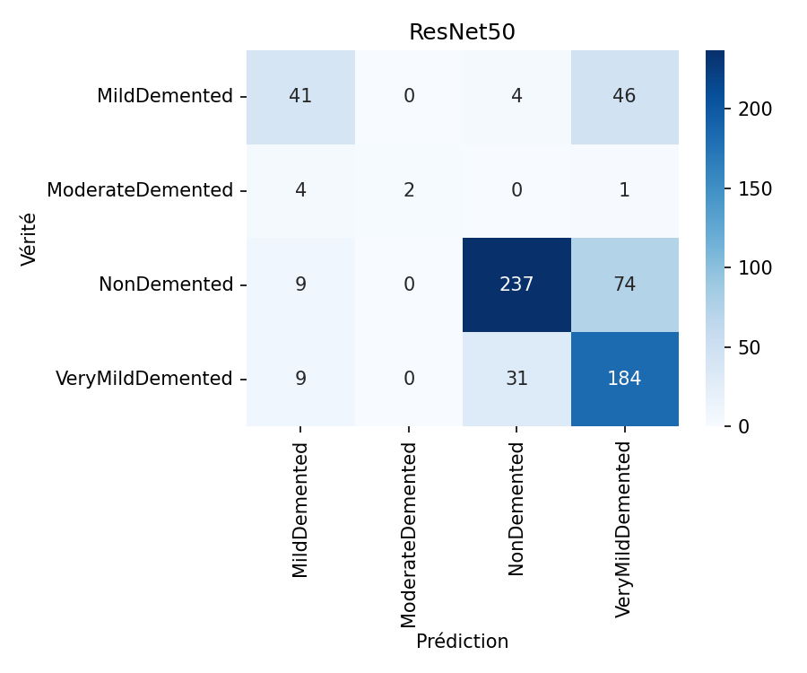
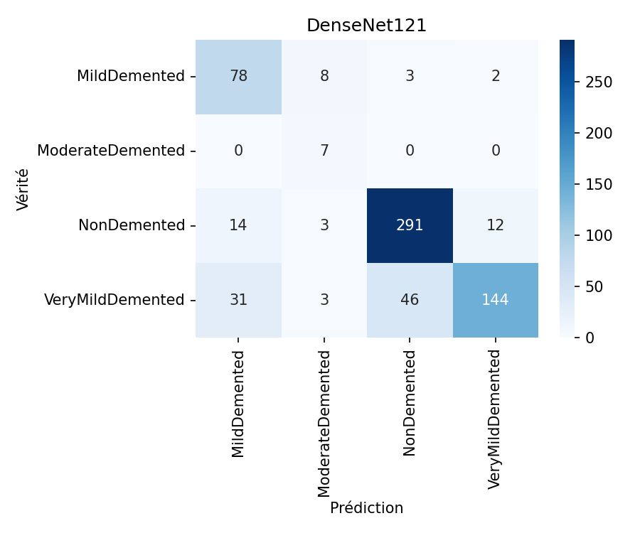
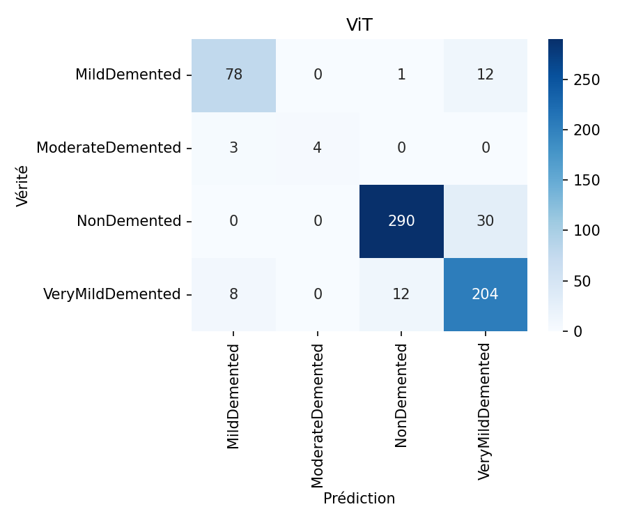

Rapport – Projet Alzheimer (Deep Learning)
Généré le 2025-12-02 13:34
Meilleur modèle
Nom : ViT
Accuracy test : 89.72%
Résultats par modèle
- densenet121 – accuracy : 0.8099688473520249
- resnet50 – accuracy : 0.7227414330218068
- vit – accuracy : 0.897196261682243
Visualisations
class_distribution.png

pca.png

tsne.png

resnet50_cm.png

densenet121_cm.png

vit_cm.png
